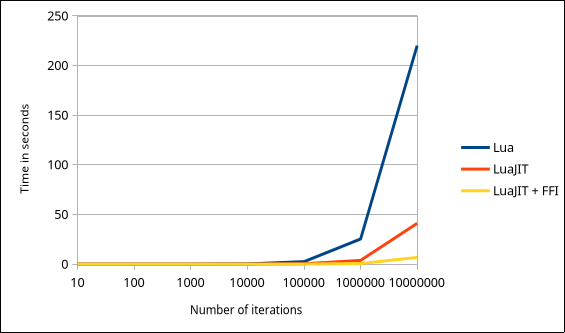
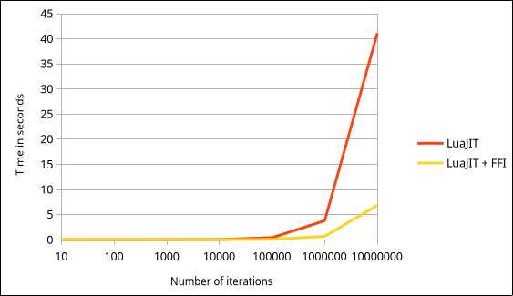

NOTE: the code is not available on Codeberg yet because the library is not finished yet. I will update the links when I upload the code.
A few weeks ago, I started writing my own math library in Lua for the LÖVE2D framework (great framework btw). It aims at being a replacement for GLM (another great library) in Lua, because I don't want to compile and link GLM in my numerous Lua projects. It's also a great way for me to learn about the mathematics behind my favorite games.
The goal of this library is to provide structures and functions to create a working 3D environment in LÖVE. It's possible because LÖVE exposes a mesh and shader API that allows us to upload arbitrary mesh and shader data to the GPU. And if I have learnt something in computer science, it's that if you can upload stuff to the GPU, you can create a 3D engine (and a Doom port too), whether the API has "2D" at the end or not.
The thing is, whether I like it or not, Lua is not a fast language. Math operations can be executed hundreds and even thousands of times per frame, which makes them critical for the game's optimization. I want the maths of my games to be as fast and reliable as possible, so that I don't have to worry about a possible performance bottleneck.
But what is the FFI library? FFI (which stands for Foreign Function Interface) is a library provided by LuaJIT that "allows calling external C functions and using C data structures from pure Lua code".
It allows us to declare a C function we want to use, and directly use it in Lua, without having to recompile the code! Here is the example provided in the docs:
local ffi = require("ffi")
ffi.cdef([[
int printf(const char *fmt, ...);
]])
ffi.C.printf("Hello %s!", "world")Here, we declare the printf function in the call to ffi.cdef, so that the library knows what to return when we index the function in the ffi.C table. When we call ffi.C.printf, the actual C function is executed! This way, we can have c-like speed without having to recompile some C code.
There is a few limitations though: namely, the string passed to ffi.cdef is not compiled! It is just a hint fo the FFI library so that it knows where to find to function. That means no C function definition in our Lua code!
What we can do however, is create C data structures for use in our Lua code:
ffi.cdef([[
typedef struct {
int a;
} foo_t;
]])
local foo = ffi.new("foo_t") -- This is a C type!
print(foo.a) -- And you can access fields like thisI think you can see how useful this can be. This is what we are going to use throughout our library.
Let's look at a simple example: a 3-component vector (let's call them Vec3). First, let's tell FFI what a Vec3 is going to look like in C code:
ffi.cdef([[
typedef struct {
double x, y, z;
} vec3_t;
]])Since the number type in Lua translates to C's double, the type of the vector's components will also be double.
This time we won't be calling ffi.new to create a vector. Usually, you would use Lua's metatables and metamethods to create an object oriented-like system to instanciate as many vectors as you want. Although this isn't very difficult, FFI provides this system natively with ffi.metatype:
local Vec3 = ffi.metatype("vec3_t", {})
local a = Vec3()
a.x = 2
print(a.x)Here, the call to ffi.metatype returns an object of type ctype, that we can call to create a new Vec3 instance. This is our equivalent of classes.
Right now, our structure only holds data and no logic at all. Let's change that! We will start with the metamethods to do simple operations on our vectors. To do that, we just need to add the metamethod to the table passed in ffi.metatype. Let's start with the __tostring metamethod, since it is a simple function:
local metatable = {
__tostring = function (self)
return "{ " .. self.x .. ", " .. self.y .. ", " .. self.z .. " }"
end
}
local Vec3 = ffi.metatype("vec3_t", metatable)
local a = Vec3()
a.x = 2
a.z = 3
print(a) -- Excpected output: "{ 2, 0, 3 }"There we go! FFI uses the metamethod we just defined to print our vector!
Before we move on with more complex logic, we need a way to create new vectors within the vector logic. This can be easily done by wrapping the call Vec3() in its own table:
local Vec3 = {}
local metatable = {
__tostring = function (self)
return "{ " .. self.x .. ", " .. self.y .. ", " .. self.z .. " }"
end
}
local Vec3FFI = ffi.metatype("vec3_t", metatable)
setmetatable(Vec3, { __call = function (, ...) return Vec3FFI(...) end })
-- Create instances as usual
local a = Vec3()We create a table called Vec3 (duh) and set its __call metamethod to return an instance created by FFI. That way, when we try to call the Vec3 table, Lua will actually call the __call metamethod and return the correct value. This will be useful for later, as we will need this table to return new Vec3s from the Vec3 logic itself.
About this so-called "complex" logic: let's implement it! We will continue with the metamethods, and implement the __add metamethod:
local metatable = {
-- snip
__add = function (self, other)
return Vec3(self.x + other.x, self.y + other.y, self.z + other.z)
end,
}That's it! That is all we need to add a metamethod to our Vec3 class. I will not detail the other metamethods, as they are as trivial to implement as this one. For now, let's create instance methods!
Apart from writing the actual method code, we need to tell FFI where to find these methods. To do that, we can set the __index field of our metatable to point towards another table that contains all the logic. The Vec3 table we defined earlier to hold our instanciation logic will be perfect for that! Let's create the __index field that contains our code:
local Vec3 = {
length = function (self)
return self.x ^ 2 + self.y ^ 2 + self.z ^ 3
end
}
local metatable = {
__index = Vec3,
-- snip
}
-- snip
setmetatable(Vec3, { __call = function (, ...) return Vec3FFI(...) end })
local a = Vec3(1, 2, 3)
print(a:length()) -- Expected output: "3.7416573867739"By setting this field to point towards our table, we can tell FFI that when we try to index a field that doesn't exist, it should look in the Vec3 table instead. By using this logic, we can now implement more complex logic like dot products or cross products. And that's it! This is all we need to use the FFI library in our code. The whole code is rather small, so I might as well include it here:
local Vec3 = {
length = function (self)
return self.x ^ 2 + self.y ^ 2 + self.z ^ 3
end,
-- you can implement more methods here
}
local metatable = {
__index = Vec3,
__tostring = function (self)
return "{ " .. self.x .. ", " .. self.y .. ", " .. self.z .. " }"
end,
__add = function (self, other)
return Vec3(self.x + other.x, self.y + other.y, self.z + other.z)
end,
-- you can implement more metamethods here
}
local Vec3FFI = ffi.metatype("vec3_t", metatable)
setmetatable(Vec3, { __call = function (, ...) return Vec3FFI(...) end })
local a = Vec3(1, 1, 1)
local b = Vec3(2, 2, 2)
print(a + b) -- Expected output: "{ 3, 3, 3 }"Matrices a a bit more complex since their usual representation is made with an array of numbers. FFI allows such a data structure with the following code:
ffi.cdef("typedef double mat4_t[16];")I will ommit the setup code but it is exactly the same as for Vec3s. Also I will leave the actual code as an exercice for the reader (or you can take the easy route and look at the code on Codeberg)
The whole point of this project was to speed up the mathematics of the project that used this library, but how fast is it compared to the old implementation? Let's do a quick benchmark!
Here is my methodology: I wrote some code that simulates the general usage of matrices and vectors in a rendering loop. Here is the code:
local projection = Mat4.perspective(math.rad(45), 800 / 600, 0.1, 10)
local view = Mat4.lookAt(Vec3(0, 0, 0), Vec3(0, 0, 1), Vec3(0, 1, 0))
local model = Mat4()
model = model:scaleTo(i)
model = model:translateTo(i)
local finalMatrix = projection * view * modelI wrote a loop that iterated through this code a few million times. I tested this three time with the normal Lua interpreter (so without the FFI library), then with LuaJIT without using FFI, and finally with LuaJIT and the FFI library. Here are the results!

Time (in seconds) depending on the number of iterations. Lower is better.
Let's remove Lua from the chart for now because it messes with the chart scale.

Time (in seconds) depending on the number of iterations. Lower is better.
Ok so apart from the fact that Lua standalone is slow as hell compared to the just-in-time compiler, wa can also see that using the FFI library improves performance by a significant margin! Now to be honest, I hope my programs will never do 10 million matrix operations in a single frame. But this is still some time save I will gladly take!
I'm glad this experiment actually worked! And I hope it is going to be useful to whoever read this article!
With <3, from Tom
12/21/2025